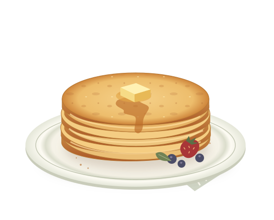

Petits calculs. Grandes tablées.
Des crêpes.
Des amis.
Les bonnes quantités.
Deux, quatre ou toute la tribu ? Trouvez les bonnes proportions pour régaler tout le monde. Sans vous prendre la crêpe.
On prépare la pâte ?commence à la poêle.

01 / La bonne mesure
À combien on se régale ?
De 1 à 100 personnes. Les grandes tablées sont les bienvenues !
On compte
3 crêpes par personne.
À
ajuster selon les appétits et les garnitures.
Et hop, la pâte est presque prête.
250 g
Farine de froment
La base de la douceur
3
Œufs
De préférence moyens
400 ml
Lait
Pour le moelleux
100 ml
Eau
Pour la légèreté
Ajoutez une pincée de sel et prévoyez un peu de beurre pour la poêle. Le sucre ? À vous de choisir la garniture !
Les quantités sont indicatives, selon la taille de votre poêle.
02 / Le petit coup de main
C’est vous
le chef.
Un saladier, un fouet,
et c’est parti.
-
01
On mélange.
Versez la farine et le sel dans un saladier. Faites un puits, ajoutez les œufs, puis incorporez le lait et l’eau petit à petit en fouettant.
-
02
On prend son temps.
Couvrez et laissez reposer la pâte 1 heure au réfrigérateur. Mélangez à nouveau et ajoutez un trait d’eau si elle est trop épaisse.
Repos : 1 heure -
03
Et que ça saute !
Chauffez et beurrez légèrement la poêle. Versez une petite louche, répartissez la pâte et cuisez environ 1 minute par face, jusqu’à ce qu’elle soit dorée.